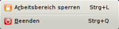
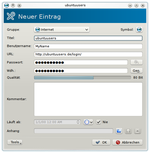
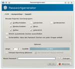

KeePassX 0.4.3
Dieser Artikel wurde für die folgenden Ubuntu-Versionen getestet:
Ubuntu 14.04 Trusty Tahr
Zum Verständnis dieses Artikels sind folgende Seiten hilfreich:
In diesem Artikel wird die Nutzung Version 0.4.3 von KeePassX beschrieben. Die Installation des Programms wird im Hauptartikel KeePassX beschrieben.
Konfiguration¶
Es wird ein Eintrag im Anwendungs-Menü unter "Zubehör -> KeePassX" angelegt. Über "Extras -> Einstellungen" können einzelne Programmteile konfiguriert werden. KeePassX speichert die Konfiguration im Homeverzeichnis in der Datei ~/.config/keepassx/config.ini ab.
Browser¶
Im KeePass-Menü unter "Extras -> Einstellungen -> Fortgeschritten" kann der bevorzugte Browser unter "Benutzerdefinierter Web-Browser" angegeben werden, sofern dieser nicht bereits als bevorzugte Anwendung im System hinterlegt ist.
| Browserbefehl | |
| Browser | Befehl |
| Epiphany | epiphany |
| Firefox | firefox %1 |
| Opera | opera %1 |
Dies ermöglicht den einfachen und schnellen Aufruf der in KeePass gespeicherten Internetadressen.
Sicherheit¶
Allgemein¶
Unter "Extras -> Einstellungen -> Sicherheit" kann festgelegt werden, wie lange Daten in der Zwischenablage gehalten werden oder der Arbeitsbereich bzw. die Datenbank gesperrt wird.
Ansichten¶
Über "Ansicht" können Benutzernamen und Kennwörter in der Darstellung ein- bzw. ausgeblendet werden.
Verschlüsselung¶
Unter "Datei -> Datenbankeinstellungen" kann zwischen AES und Twofish als Verschlüsselungsalgorithmus gewählt werden. Außerdem sollte der voreingestellte Wert für die Verschlüsselungsrunden angepasst werden, da 6000 Runden zu gering sind. Man kann sich einen Vorschlagswert berechnen lassen, in dem man auf den kleinen Butten neben dem Rundenwert klickt.
Autotype¶
Man kann mit ShortCut festlegen, die Logins im Browser durch KeePass automatisch ausführen zu lassen. Über einen  Rechtsklick ist diese Funktion bei den einzelnen Konten verfügbar. Außerdem ist es möglich, bei einer geöffneten Webseite mit einem Anmeldeformular die Datenbank nach passenden Einträgen mit einem globalen Kurzbefehl durchsuchen zu lassen. Existiert ein passender Eintrag, wird Autotype automatisch ausgeführt. Vorausgesetzt ist, dass das Feld "Titel" des KeyPassX-Eintrages und der Fenstertitel der Website im Browser übereinstimmen. Dies kann man bei einzelnen Einträgen unter "Tools -> Auto-Type: Select target window" einstellen. Der globale Kurzbefehl für Autotype lässt sich unter "Extras -> Einstellungen -> Fortgeschritten" festlegen.
Rechtsklick ist diese Funktion bei den einzelnen Konten verfügbar. Außerdem ist es möglich, bei einer geöffneten Webseite mit einem Anmeldeformular die Datenbank nach passenden Einträgen mit einem globalen Kurzbefehl durchsuchen zu lassen. Existiert ein passender Eintrag, wird Autotype automatisch ausgeführt. Vorausgesetzt ist, dass das Feld "Titel" des KeyPassX-Eintrages und der Fenstertitel der Website im Browser übereinstimmen. Dies kann man bei einzelnen Einträgen unter "Tools -> Auto-Type: Select target window" einstellen. Der globale Kurzbefehl für Autotype lässt sich unter "Extras -> Einstellungen -> Fortgeschritten" festlegen.
Problembehebung Autotype¶
Bei Passwörter mit Sonderzeichen kann es bei der Verwendung der Auto-Type Funktion zu Problemen kommen. Abhilfe ist im Blogbeitrag Auto-Type-Funktion von KeePass unter Gnome verwenden  (01/2014) beschrieben, nämlich der folgende Eintrag in Autostart
(01/2014) beschrieben, nämlich der folgende Eintrag in Autostart
bash -c "setxkbmap de"

Systemtray¶
Unter "Extras -> Einstellungen -> General" kann eingestellt werden, ob ein Symbol in der Leiste angezeigt werden soll sowie das Verhalten. Ein  Linksklick bringt das Programm in den Hinter- bzw. Vordergrund. Ein Rechtsklick öffnet ein weiteres Menü. Hier kann der Arbeitsbereich gesperrt oder das Programm beendet werden.
Linksklick bringt das Programm in den Hinter- bzw. Vordergrund. Ein Rechtsklick öffnet ein weiteres Menü. Hier kann der Arbeitsbereich gesperrt oder das Programm beendet werden.
Bedienung¶
Werkzeugleiste¶
Die Grundfunktionen von KeePassX sind über die Werkzeugleiste zu erreichen:
| Werkzeugleiste | ||
| Symbol | Name | Beschreibung |
| "Neue Datenbank" | Eine neue Datenbank wird erstellt. | |
| "Datenbank öffnen" | Eine bereits existierende Datenbank öffnen. Zum automatischen Öffnen Einstellungen ändern. | |
| "Datenbank speichern" | Datenbank wird gespeichert. | |
| "Neuen Eintrag hinzufügen" | Datensatz oder Gruppe neu erstellen. | |
| "Eintrag anzeigen/bearbeiten" | Datensatz anzeigen oder Veränderungen vornehmen. | |
| "Eintrag löschen" | Datensatz wird entfernt. | |
| "Benutzernamen in die Zwischenablage kopieren" | Der Benutzername wird zur weiteren Verwendung kopiert. | |
| "Passwort in die Zwischenablage kopieren" | Das Passwort wird zur weiteren Verwendung kopiert. | |
| "Arbeitsbereich sperren" | Das Programm wird gesperrt. Hauptschlüssel wird zum Entsperren benötigt. | |
Alle Menüpunkte sind im jeweiligen Fensterbereich über einen Rechtsklick ebenfalls erreichbar.
Datenbank¶
Eine vorhandene "Datenbank öffnen" bzw. importieren. Sofern keine Datenbank vorhanden ist, ist diese mit "Neue Datenbank" zu erstellen. Diese wird beim ersten Speichern unter dem angegebenen Namen als KeePass-Datenbank (.kdb) angelegt.
Passwort¶
Der Hauptschlüssel sollte sicher gewählt sein, da ein unsicheres Passwort Tür und Tor öffnet. Dieses sollte einfach zu merken sein, aber trotzdem ein Höchstmaß an Sicherheit mit sich bringen [3].
Im Nachhinein kann dieses unter "Datei -> Hauptschlüssel ändern" geändert und eine Schlüsseldatei hinzugefügt bzw. entfernt werden.
Schlüsseldatei¶
Für eine höhere Sicherheit sorgt die Verwendung einer Schlüsseldatei (.key), welche bei der Datenbankerstellung angelegt werden kann. Es ist ebenfalls möglich Dateien anderer Formate zu wählen. Bei jedem weiteren Öffnen der Datenbank ist diese Schlüsseldatei erforderlich.

Gruppen¶
Zur besseren Übersicht können weitere Gruppen, neben "Internet" und "eMail", eingerichtet werden. Dies kann über "Gruppen -> Neue Gruppe hinzufügen" oder alternativ durchs Drücken von
Strg +
G erreicht werden. Nach Eingabe eines aussagekräftigen Titels, z. B. "WLAN", ggf. noch ein eigenes Gruppensymbol zuweisen. Mit "OK" wird die neue Gruppe erstellt. Um Gruppen zu löschen oder zu bearbeiten einen Rechtsklick auf die gewünschte Gruppe ausführen und die Operation auswählen.
Eintrag¶
Um einen Eintrag vorzunehmen wählt man die gewünschte Gruppe im linken Fensterbereich, durch einen Linksklick, aus. Im rechten Fenster einen Rechtsklick ausführen und "Neuen Eintrag hinzufügen" auswählen. Die erforderlichen Daten eingeben, ggf. ein Symbol zuordnen und mit "OK" übernehmen. Einzelne Dateien können ebenfalls aufgenommen und Einträge nachträglich bearbeitet/gelöscht werden. Ein Passwortgenerator hilft beim Erstellen von Passwörtern.

Passwortgenerator¶
Über "Extras -> Passwortgenerator …" oder Strg + P ist dieser zu erreichen. Passwörter verschiedenster Stärke und Länge können zufällig erzeugt werden. Dabei kann man auch angeben, aus welchen Zeichenkombinationen (z. B. nur Buchstaben, Buchstaben und Zahlen, Sonderzeichen usw.) das Passwort bestehen soll.
Zwischenablage¶
Benutzernamen und Passwörter können zur weiteren Verwendung in die Zwischenablage kopiert werden. Je nach Sicherheitseinstellung werden diese nach kurzer Zeit aus dieser gelöscht. Zu erreichen ist die Funktion über einen Rechtsklick oder die Werkzeugleiste.
Import/Export¶
KeePassX kann unter verschiedenen Betriebssystemen genutzt werden. Es beherrscht den Import der Formate: KeePassX (.xml), KWallet (.xml) und PwManagerfile (.pwm). Als Exportformat stehen KeePassX (.xml) und Textdateien (.txt) zur Verfügung. Die Punkte sind über "Datei -> Importieren aus" bzw. "Datei -> exportieren nach" zu erreichen.
Portabilität¶
Um die Passwörter auch unterwegs verfügbar zu haben, kann alternativ auch die Windows-Version von KeePassX  mittels Wine auf einem USB-Stick entpackt werden. Eine weitere Installation ist nicht nötig und KeepassX kann nun sowohl unter Linux als auch unter Windows benutzt werden. Die in KeepassX erstellte Datenbank (.kdb) kann dann einfach auf den Stick kopiert werden und fortan unter Windows und Linux verwendet werden. Wenn man KeepassX das erste Mal von dem Stick startet, findet das Programm die Datenbank natürlich nicht automatisch, weswegen der Pfad zur Datenbank einmal angegeben werden muss.
mittels Wine auf einem USB-Stick entpackt werden. Eine weitere Installation ist nicht nötig und KeepassX kann nun sowohl unter Linux als auch unter Windows benutzt werden. Die in KeepassX erstellte Datenbank (.kdb) kann dann einfach auf den Stick kopiert werden und fortan unter Windows und Linux verwendet werden. Wenn man KeepassX das erste Mal von dem Stick startet, findet das Programm die Datenbank natürlich nicht automatisch, weswegen der Pfad zur Datenbank einmal angegeben werden muss.
Hinweis:
Der Rückgriff auf die originäre Windows-Version KeePass (ohne X) führt im Gegensatz zu früheren Kombinationen dieser Art nur dann zum Erfolg, wenn das Paket mono-runtime installiert ist.
Die Datenbankdateien sind auch kompatibel zur Android-App KeePassDroid  . Die von der Linux-Version von KeyPassX erstellte .kdb-Datei kann man einfach auf das Android-Smartphone kopieren, KeePassDroid installieren und starten. Nach Eingabe der Passphrase (und je nach Leistungsfähigkeit des Smartphones) erscheint früher oder später eine Liste mit den Gruppen, die zu den einzelnen Einträgen und Inhalten führt.
. Die von der Linux-Version von KeyPassX erstellte .kdb-Datei kann man einfach auf das Android-Smartphone kopieren, KeePassDroid installieren und starten. Nach Eingabe der Passphrase (und je nach Leistungsfähigkeit des Smartphones) erscheint früher oder später eine Liste mit den Gruppen, die zu den einzelnen Einträgen und Inhalten führt.
Textdatei¶
Die Ausgabe in der Textdatei gliedert sich nach dem folgenden Muster:
'' *** Group: Gruppenname *** Title: Name Username: Nickname Url: http://www.xyz.de Password: ganzdollgeheim Comment:
Tastenkürzel¶
| Tastenkürzel | |
| Taste(n) | Bedeutung |
| Strg + N | Neue Datenbank |
| Strg + G | Neue Gruppe |
| Strg + Y | Neuer Datenbankeintrag |
| Strg + O | Datenbank öffnen |
| Strg + S | Datenbank speichern |
| Strg + W | Datenbank schließen |
| Strg + L | Arbeitsbereich sperren |
| Strg + B | Benutzername in die Zwischenablage kopieren |
| Strg + C | Passwort in die Zwischenablage kopieren |
| Strg + U | Hinterlegte Internetadresse aufrufen. |
| Strg + P | Passwortgenerator starten. |
| Strg + Q | Programm beenden |
- Erstellt mit Inyoka
-
 2004 – 2017 ubuntuusers.de • Einige Rechte vorbehalten
2004 – 2017 ubuntuusers.de • Einige Rechte vorbehalten
Lizenz • Kontakt • Datenschutz • Impressum • Serverstatus -
Serverhousing gespendet von